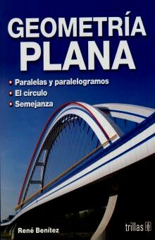
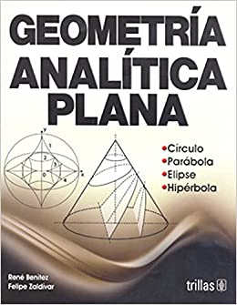
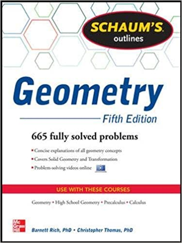
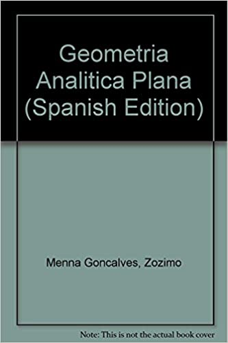

Geometría
La geometría plana se encarga de estudiar las figuras planas. Aquellas que tienen dos dimensiones: ancho y largo. El inicio del estudio comienza con los elementos básicos: punto, recta y plano. Seguido, abarca el análisis de polígonos regulares. Entre ellos los triángulos, teorema de pitágoras, la semejanza de triángulos. El círculo y figuras compuestas.
La geometría analítica es una rama de las matemáticas que estudia con profundidad las figuras, sus distancias, sus áreas, puntos de intersección, ángulos de inclinación, puntos de división, volúmenes, etc. Es un estudio más profundo para saber con detalle todos los datos que tienen las figuras geométricas.
La geometría descriptiva es un conjunto de técnicas geométricas que permite representar el espacio tridimensional sobre una superficie bidimensional. Por tanto, mediante una «lectura» adecuada posibilita resolver problemas espaciales en dos dimensiones de modo que se garantiza la reversibilidad del proceso.
Los mejores libros para aprender geometria son los siguientes:
1. Geometría Plana - René Benitez
Este libro de geometría plana es uno de los más populares por incluir los temas más relevantes de esta materia. Hace referencia a la geometría euclidiana, que concentra conceptos elementales necesarios para comenzar el estudio a nivel universitario. Los estudiantes de ingeniería, arquitectura, entre otras carreras, se benefician con este texto, porque incluye aplicaciones. Tiene un enfoque contemporáneo que promueve el pensamiento a través de asimilar los conceptos y propiedades de la geometría, con sus aplicaciones en la vida. Este libro también se pensó para que los estudiantes más atrevidos, y disciplinados puedan estudiar de forma autodidacta. Los ejercicios contenidos y respuestas a los ejercicios impares apoyan a la compresión de conceptos.
 Comprar Libro{kind=link}
2. Geometría Analítica Plana - René Benitez
Este texto de geometría plana fue escrito con la intención que los estudiantes del nivel medio superior desarrollen un pensamiento analítico. Los temas abordados son lo básicos para un curso previo a los cursos de licenciaturas de ciencias exacta, principalmente ingeniería. Los contenidos se adaptan a los programas de bachillerato de escuelas tecnológicas como las que pertenecen al IPN. Se centra en las ideas geométricas y los atores le añaden matices para ir tocando el cálculo y algunas aplicaciones. Los conceptos abstractos son explicados de forma clara y concisa, con apoyos visuales tales como imágenes, gráficas e ilustraciones. Los ejercicios y sus soluciones son el complemento perfecto para el estudio de esta materia.
 Comprar Libro3. Schaum’s Outlines Geometry (Inglés) - Rich Barnett y Thomas Christopher
Este libro se considera como el mejor libro de geometría plana es uno de los más aceptados por alumnos y maestros debido a los recursos audio visuales que la Serie Schaum’s facilita. Como es predicado de la editorial, este libro tiene como objetivo apoyar a todos los estudiantes de esta materia para que puedan aprender de manera rápida, obteniendo resultados tanto de aprendizaje como de prácticos al desarrollar las habilidades para pasar un examen con excelente calificación. Contienen muchos ejemplo y ejercicios resueltos paso a paso. El carácter de texto orienta al estudiante a obtener una calificación sobresaliente en sus pruebas finales del curso de geometría analítica plana.
 Comprar Libro4. Geometría Analítica Plana - Zozimo Menna Goncalves
Este libro de geometría analítica plana, es difícil de conseguir, su contenido es de alta relevancia. Está enfocado a estudiantes serios de las matemáticas, que han desarrollado a través de mucho trabajo las habilidades requeridas para abordar los temas teóricos y prácticos con profundidad. Es un libro que debe estar en la biblioteca personal de todo entusiasta de las matemáticas, en especial, de la geometría. Su estudio exige más de lo habitual de un aprendiz.
 Comprar Libro